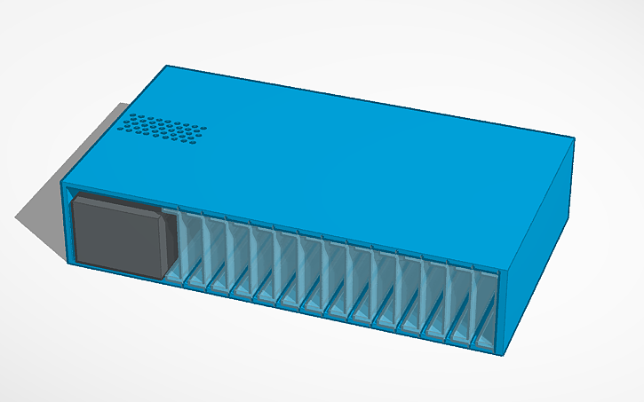
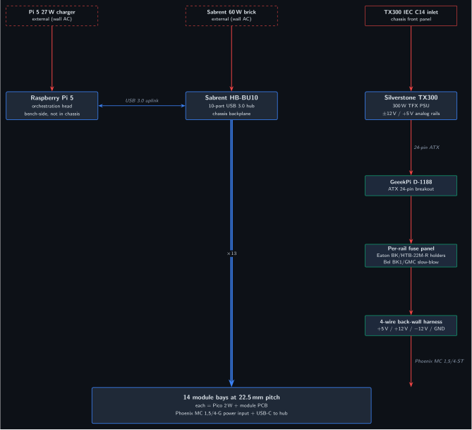
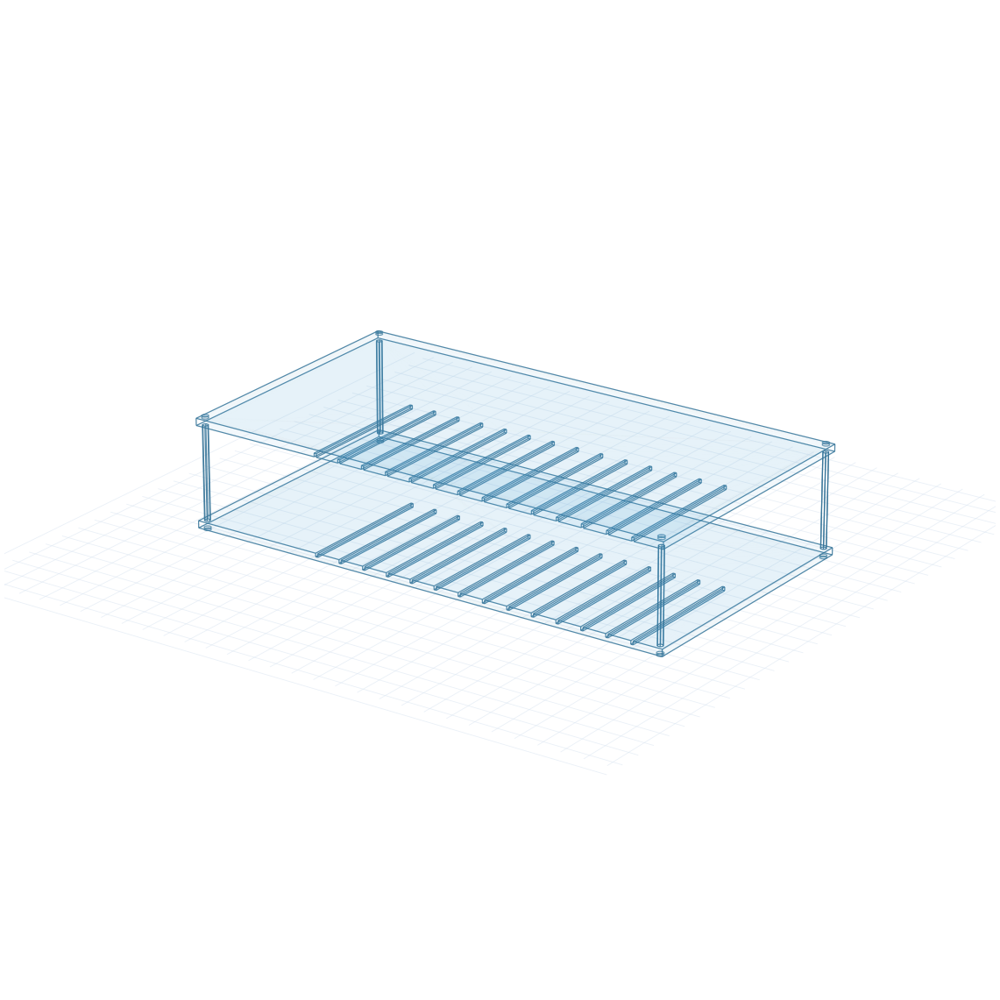
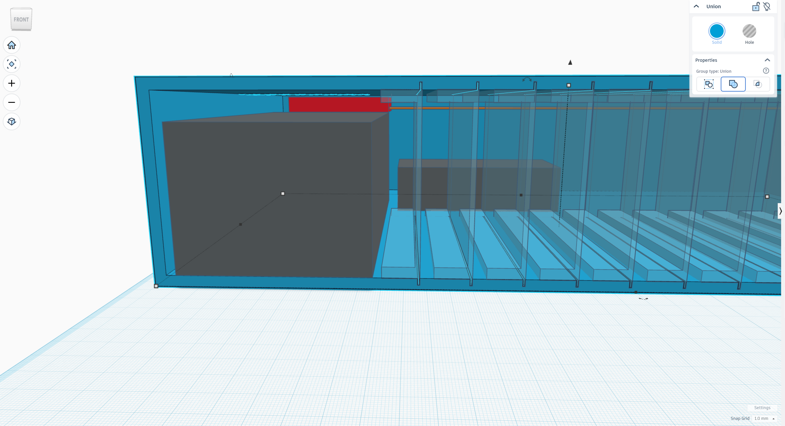
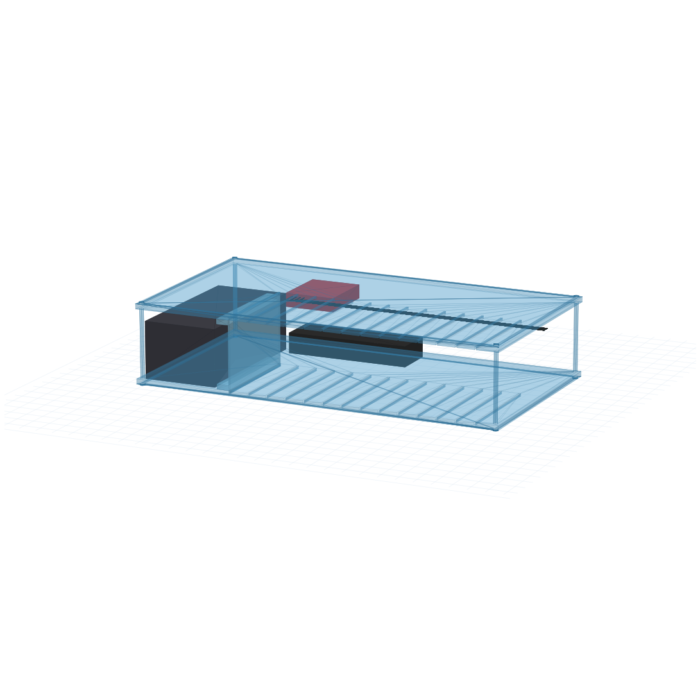
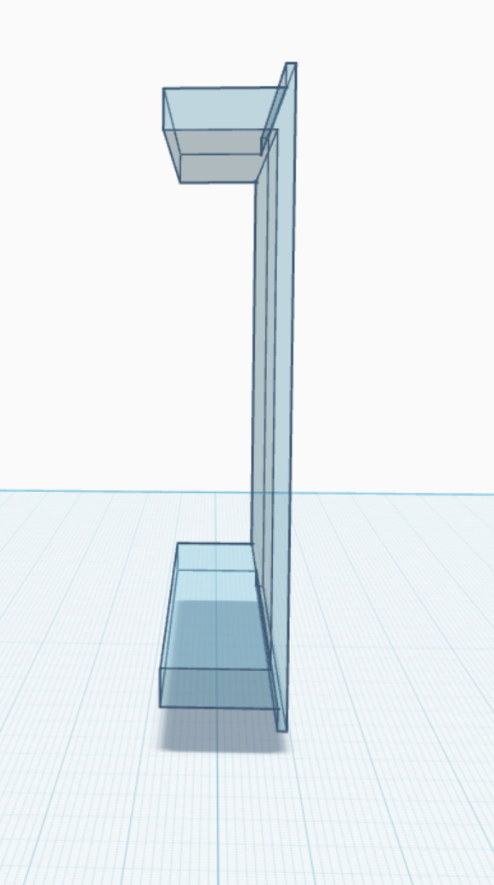
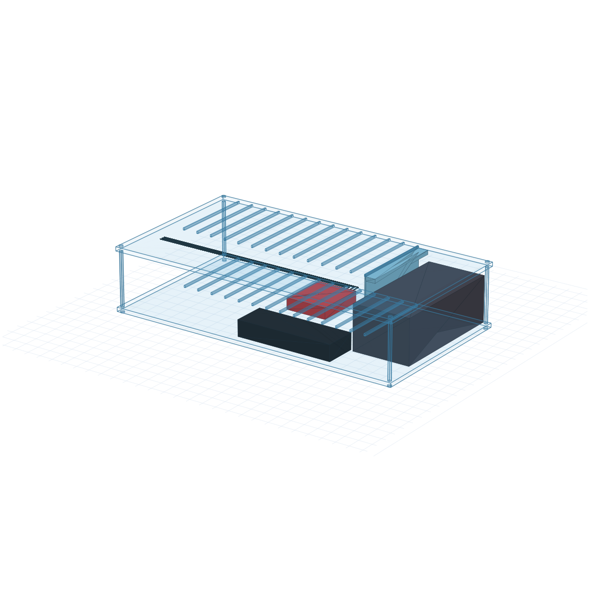

Companion to the PMVB System Design Document section 11. This document defines the mechanical and electrical design of the PMVB chassis: an open-frame card-cage acrylic enclosure (4 panels laser-cut from SendCutSend, clamped by 4 M3 corner standoffs) housing the Silverstone SST-TX300 PSU as an analog-rail backbone, a GeeekPi D-1188 ATX breakout, a Sabrent HB-BU10 USB 3.0 hub as the chassis-internal USB-TMC backplane, and 14 module slots arranged as parallel vertical blades.
Architecture in one paragraph. The chassis is the integrated mechanical-and-power subsystem that holds the entire bench instrument fabric in a single ~16.5" × 9.4" × 3.6" footprint. The TX300 PSU supplies analog ±12 V and +5 V only to instrument modules that need clean bipolar or higher-current rails (Module 1B VMU, Module 1D SMU Lite, Module 1E AWG, Module 1F HV diff probe, Module 1G current probe, Module 1H DMM, Module 2B precision DAQ, Module 2E digitizer); it does not power the Pi 5, the USB hub, or chassis-side Picos, each of which has its own external supply (Pi 5 uses its 27 W USB-C charger, the Sabrent hub runs from its own wall brick, and module Picos draw 5 V from USB downstream power). Modules are vertical blades (16.3 × 125 × 86 mm body, FDM PLA / PETG via 3D-print service) that slot into the chassis at 22.5 mm pitch, plug into a 4-rail back-wall power harness via Phoenix Contact MC 1,5/4 connectors, and present USB to the Sabrent hub for SCPI command and measurement-data transport.
v1.0 is open-frame. The chassis has a floor, a ceiling, and two internal divider plates (the bottom and top groove plates with the module-slot through-cuts), but no side walls, rear wall, or front panel. Walls were dropped because the four corner standoffs handle structural rigidity on their own, and adding walls re-introduces TX300 thermal-management constraints (intake/exhaust airflow, vent geometry) that warrant their own design pass. The walled chassis with explicit ventilation geometry is the v1.1 future enhancement described in section 9. Until then, the bench operator gets unrestricted visual and physical access to all chassis internals — TX300, GeeekPi breakout, USB hub, harness, and modules — from any side.

Figure 1: PMVB chassis fully populated with 14 module blades (open-frame v1.0 card cage). The TX300 PSU sits at the left end of the chassis floor; the GeeekPi D-1188 ATX breakout sits on top of the TX300’s rear ~20 mm; the Sabrent USB hub sits at the rear-center of the floor; modules occupy the right ~309 mm of the chassis at 22.5 mm pitch. Side walls, rear wall, and front panel are deferred to v1.1.
The chassis is an integrated single-enclosure subsystem that consolidates the analog supply backbone, the USB-TMC backplane, and the module bay into one bench-friendly footprint. Three architectural decisions drive the design:
The TX300 PSU is the analog-rail backbone, not the chassis-wide power source. Its ±12 V and +5 V outputs feed only the instrument modules that need clean bipolar or higher-current rails. Bench infrastructure (Pi 5, USB hub, the Picos at the chassis level) runs from external supplies. This decoupling means the chassis interior is exclusively SELV (safety extra low voltage) once mains is contained inside the TX300’s certified case, and the chassis itself does not need to be a safety boundary.
Modules are vertical blades in a card-cage-style bay. Each module is a 17 × 125 × 80 mm PCB that slides into a slot at 22.5 mm pitch, plugs into a back-wall power harness, connects USB to the Sabrent hub, and presents its module-specific I/O at the front face. This pattern follows the spirit of NI PXI / Eurocard subracks at hobbyist scale, with a custom laser-cut acrylic frame replacing the cost-prohibitive professional subrack hardware.
The chassis is open-frame acrylic. The TX300’s certified IEC inlet handles AC safety; the acrylic frame is purely mechanical containment and does not need to be earth-bonded. Open construction makes the architecture self-documenting (you can see what’s inside), simplifies cooling (TX300 fan exhausts through a 6 × 12 grid of vent holes in the chassis top), and keeps fabrication cost under $100 for the entire enclosure.

Figure 2: Chassis architecture as two parallel fabrics, with modules split by rail consumption. The analog power fabric (right column, red edges) runs from the TX300 IEC inlet through the TX300 PSU, GeeekPi D-1188 ATX breakout, per-rail fuse panel, and 4-wire back-wall harness — terminating only at the analog module group (×8: 1B, 1D, 1E, 1F, 1G, 1H, 2B, 2E). The USB-TMC control fabric (left and center columns, blue edges) runs from the Raspberry Pi 5 (external, not in chassis) over USB 3.0 to the Sabrent HB-BU10 USB hub (chassis backplane), then fans out as USB-A to both module groups: ×5 to digital modules (1A, 1C, 2A, 2C, 2D, USB-only consumers) and ×8 to analog modules. Three external supplies (Pi 5 charger and Sabrent hub brick shown dashed; TX300 IEC inlet shown solid because it terminates inside the chassis) feed the three top-level subsystems independently. Front-panel diagnostic strip (banana jacks + LEDs) is documented separately in §3.7 and §4.6/4.7.
The v1.0 chassis is an open-frame card cage with envelope dimensions 420 × 238 × 92 mm (~16.5" × 9.4" × 3.6"). Material is 3 mm cast acrylic throughout, laser-cut from SendCutSend with the parts list described in section 3.2. The bench footprint is comparable to a 1U–2U rack-mount instrument.
v1.0 is intentionally open-frame: no side walls, no rear wall, no front panel. Four acrylic panels (floor, bottom groove plate, top groove plate, ceiling) clamped together by four M3 corner standoffs make up the entire mechanical structure. Modules slide into the chassis from any open side and engage the lip-and-groove card guides cut into the divider plates. The TX300 PSU, GeeekPi D-1188 breakout, and Sabrent HB-BU10 USB hub sit on the chassis floor and are accessible from all open faces during bring-up.
Walls were considered and dropped for v1.0 because the standoffs handle structural rigidity on their own and adding walls re-introduces TX300 thermal-management constraints (intake/exhaust airflow path, vent geometry) that are out of scope for the first build. A walled chassis with explicit ventilation geometry is the v1.1 future enhancement described in section 9.

Figure 3: Empty chassis (4-panel open-frame card cage). The 14 module slot grooves are visible across the bottom and top divider plates. The TX300 zone occupies the leftmost 86 mm of the chassis floor; module slots span the right 309 mm at 22.5 mm pitch. With no walls, the TX300, GeeekPi breakout, and USB hub are visible from any side.
The internal coordinate system used throughout this document: X is the long axis (chassis length, slot-pitch direction), Y is the depth axis (front to back), Z is the vertical axis (floor to ceiling). For consistency with the parametric DXF generator at tools/fabrication/generate_prototype_v10.py, the origin is at the chassis bottom-left corner with X spanning 0 to 420, Y spanning 0 to 238, and Z spanning 0 to 92.
The v1.0 frame is four laser-cut pieces of 3 mm cast acrylic (down from the six pieces a fully walled chassis would need). Cuts are produced parametrically by tools/fabrication/generate_prototype_v10.py and exported as separate per-panel DXF files (one part per file, per SendCutSend’s nesting guidelines).
| Piece | Dimensions (mm) | Quantity | Cuts/features |
|---|---|---|---|
| Solid plate (floor and ceiling) | 420 × 238 × 3 | 2 | Four 3.4 mm M3 clearance holes at corner positions (5, 5), (415, 5), (5, 233), (415, 233), accepting the M3 corner standoffs |
| Groove plate (bottom and top divider) | 420 × 238 × 3 | 2 | Same four M3 corner clearance holes; 14 lip-engagement through-cuts at 22.5 mm pitch starting at x = 90 mm (each 2 mm wide × 125 mm long, running front-to-back along Y), accepting the 1.5 mm wide × 3 mm tall rail lips on each module body. The 0.5 mm width difference gives sliding clearance to accommodate FDM PLA dimensional tolerance |
DXF files are at tools/fabrication/out/panel_solid_plate.dxf and panel_groove_plate.dxf. Both files contain a single closed outer outline plus interior cutouts (circles for the M3 holes, rectangles for the slot grooves) wound clockwise so SendCutSend’s interpreter reads them as holes rather than nested parts.
Frame assembly uses just four M3 hex aluminum standoffs plus eight M3 button head cap screws — no acrylic tapping required, no glue:
The two groove plates sit between the floor and ceiling, held in place by the floor and ceiling sandwiching them and by the M3 corner standoffs passing through their corner holes. The bottom groove plate sits at Z = 3..6 (top face flush with the cavity floor at Z = 6); the top groove plate sits at Z = 86..89 (bottom face flush with the cavity ceiling at Z = 86). Module bodies span Z = 3..89, with their bottom rail lip engaged in the bottom groove plate’s cutouts (Z = 3..6) and their top lip engaged in the top groove plate’s cutouts (Z = 86..89).
The lip-engagement cutouts in the two groove plates form the card guides for module insertion. Each module’s body has a 1.5 mm wide × 3 mm tall rail lip running along the bottom-right and top-right corners; these lips slide into the chassis groove cutouts (2.0 mm wide × 3 mm deep) as the module is inserted from any open side. The 0.5 mm width difference between groove and lip gives sliding clearance — modules can be inserted and removed without binding under FDM print and laser-cut tolerance variation.
The TX300 sits at the left end of the chassis floor, X = −230 to −144 (86 mm wide), Y = −118 to +60 (178 mm deep), Z = 6 to 72 (66 mm tall). Orientation: the TX300’s IEC C14 inlet faces the chassis front (Y = −118 face) so the AC cord plugs in from the front; the TX300’s 24-pin ATX output cable exits from the chassis back (Y = +60 face) and terminates at the GeeekPi D-1188 mounted on top of the rear portion of the TX300; the 80 mm fan exhausts upward through the top vent grille (Z = 72 top face). The PSU mounts to the floor plate via four M3 standoffs threaded into the TX300’s existing M3 mounting holes (standard TFX form factor pattern).

Figure 4: Cutaway view of the TX300 PSU (gray) and the GeeekPi D-1188 ATX breakout (red, on top of the TX300’s rear ~20 mm) inside the chassis. The TX300’s full top surface from the front edge to ~20 mm forward of the rear is left exposed for the fan to exhaust upward through the chassis top vent grid.
Internal AC routing is contained entirely within the TX300’s certified enclosure; no external mains wiring exits the PSU body. The IEC inlet is exposed through a 35 × 28 mm rectangular cutout in the front panel at the TX300 IEC inlet position (occupying the leftmost ~90 mm of the front-panel face, separate from the diagnostic strip and module faceplate region).
The GeeekPi D-1188 ATX breakout sits on top of the TX300 at the rear ~20 mm of the TX300’s footprint, X = −213 to −143 (70 mm), Y = +41 to +100 (59 mm), Z = 73 to 83 (10 mm tall). The 70 × 59 mm breakout PCB mounts via four M3 × 6 mm standoffs that thread into the TX300’s top-face mounting holes (or, alternatively, glue down with thermal-grade epoxy if those holes are unavailable on a particular TX300 SKU).
This positioning gives the breakout’s screw terminals a short, direct cable run to the back-wall harness, while leaving the front ~80 mm of the TX300 top exposed for the fan exhaust to pass through the vent grille above.

Figure 5: View of the chassis interior with the TX300 (left, gray), GeeekPi D-1188 (red, on top of the TX300 rear), and 14 module blades slotted into the bay. The GeeekPi sits at the back portion of the TX300 top so its screw terminals are positioned directly above the back-wall harness rails.
The Sabrent HB-BU10 sits at the rear-center of the chassis floor, X = −136 to −26 (110 mm), Y = +24 to +74 (50 mm), Z = 6 to 36 (30 mm tall). The hub mounts to the floor plate via two M3 × 6 mm screws threaded into adhesive-backed standoffs (the hub doesn’t have factory mounting holes; we attach standoffs with VHB tape to the hub bottom, then bolt those down).
The hub’s USB-A downstream ports face forward (toward Y = −116) so each downstream port can run a short USB-C-to-USB-A cable rearward to the corresponding module’s rear-edge Pico USB-C connector. With the modules’ Pico USB-C connectors sitting at the rear edge of each module PCB (Y = +8) and the hub at Y = +24, the cable run is ~16 mm direct-line, easily handled by a 75–150 mm pre-built cable. The hub’s uplink (Type-B, micro-B, or USB-C depending on the specific HB-BU10 revision) and DC barrel input pass out the back panel through cutouts.
The module bay occupies the right ~3/4 of the chassis floor: 14 slots at 22.5 mm pitch, X centers at −132, −110, −87, −64, −42, −20, +3, +26, +48, +70, +93, +116, +138, +160.

Figure 6: Side profile of a single module body. The C-shape cross-section is clearly visible: closed top and bottom shells, closed right wall, open left face. The two extensions at the top-right and bottom-right corners are the 1.5 mm × 3 mm rail lips that engage the chassis bottom and top groove plates (cut with 2.0 mm wide × 3 mm deep through-cuts, giving 0.5 mm sliding clearance). The host PCB mounts vertically against the cavity right wall and components extend leftward through the cavity and into the inter-module gap, giving 21.5 mm of stack budget per slot.
Module body envelope (v10). Each module body is 16.3 × 125 × 86 mm outer (lips included in the 86 mm height), fabricated as a single 3D-printed FDM PLA part with a C-shape cross-section:
Each module’s body sits at Y = 3 (front edge) to Y = 128 (rear edge), Z = 3 (bottom lip engages bottom groove plate from Z = 3 to Z = 6) to Z = 89 (top lip engages top groove plate from Z = 86 to Z = 89). In chassis coordinates the module body proper occupies Z = 6 to Z = 86 (the 80 mm cavity zone between the two groove plates), with the 3 mm lips above and below this range.
Internal cavity is 14.3 × 125 × 68 mm (cavity X = 0 to 14.3 inside the 2.0 mm right wall, Y = full 125 mm depth, Z = 9 to 77 in module coordinates between the 6 mm top and bottom shells).
v10 module geometry was revised on 2026-05-09 from the earlier v9 spec (0.6 × 3 mm lips, 1.5 mm right wall, 0.4 mm sliding clearance) after JLCPCB’s FDM design guidelines were verified. The v9 geometry violated four FDM rules at once: lip width below the 1.5 mm protrusion minimum, lip width below the 1.0 mm embossed-detail minimum, ±0.3 mm tolerance dwarfing the 0.6 mm feature size, and 0.4 mm sliding clearance under the 0.5 mm minimum for moving parts. v10 hits all four rules with margin.
Component stack budget per module: 21.5 mm. Because every module’s left face is open and every module follows the same orientation (lip-on-the-right), components on each module’s PCB can extend leftward from the module’s own cavity right wall (x = +7) all the way to the adjacent module’s right wall outer edge (x = neighbor + 8.2 = this − 14.3 mm). The 0.6 mm rail lip on the adjacent module is above and below the cavity Z range and does not reduce the middle-cavity X budget. This is why we can fit headered Pico stacks (14.2 mm) and direct-soldered Pico stacks (6.2 mm) plus analog circuitry on the same side of the host PCB.
Module mount convention (mandatory across all modules): each module’s host PCB is mounted vertically against the cavity right wall (PCB plane parallel to the chassis YZ plane, PCB normal pointing leftward into the cavity). All components are placed on the cavity-facing (left-pointing) face of the PCB. No components on the back face of the PCB (which is pressed against the right wall). This convention is what makes the 21.5 mm stack budget achievable — without it, adjacent modules could collide in the inter-module gap.
Connector positions on the host PCB:
In v1.0 the chassis has no front panel, so the chassis-level diagnostics (banana jacks + LED indicators) mount on a separate small acrylic strip that bolts to the chassis floor near the front edge rather than to a dedicated front-panel piece.
The diagnostic strip carries:
Module front-panel cutouts: with no chassis front panel, each module’s front-edge faceplate I/O sits exposed in v1.0. Each module body’s front face (Y = 3 in chassis coordinates) carries the module-specific connectors directly. This is acceptable for bring-up and bench operation; v1.1 will add a chassis front panel with per-module cutouts to restore a finished look once each module’s faceplate I/O converges.
The TX300’s 80 mm fan exhausts upward (Z = +72 face, the top of the PSU). With no chassis ceiling above the TX300 in v1.0, the fan exhausts directly to room air through the open chassis top — no vent grid needed. (The ceiling plate covers the right portion of the chassis above the module zone, but the leftmost 86 mm of chassis width — the TX300 zone — has the ceiling plate optionally cut back or simply offset away from the TX300 footprint.)
The current fabrication has the ceiling plate spanning the full 420 × 238 mm footprint with no vent holes cut, on the assumption that with no side walls or rear wall to contain the airflow, the TX300 fan can pull intake air in from any open side and exhaust through the ~80 mm clearance between the TX300 top face (Z = 72) and the chassis ceiling underside (Z = 89). This 17 mm vertical gap plus the open sides gives ample airflow path under v1.0.
v1.1 will need explicit ventilation geometry because adding side walls and a rear wall closes off the intake path. See section 9 Future Enhancements.
The TX300 provides the standard ATX rails at its 24-pin output: +3.3 V, +5 V, +12 V, −12 V, +5 V Standby, GND. PMVB uses only +5 V, +12 V, −12 V, and GND from this set; +3.3 V and +5 V Standby are not routed forward of the GeeekPi breakout. Per-rail current capacity (per the TX300 datasheet): +5 V at 14 A, +12 V at 22 A, −12 V at 0.3 A. The −12 V rail’s 0.3 A budget bounds how many op-amps can be powered simultaneously across all modules; current planning expects worst-case ~150 mA combined across all v1.0 + v1.1 op-amp modules, comfortably within budget.
The GeeekPi D-1188 (Amazon B08MC389FQ, ~$13) takes the TX300’s 24-pin ATX cable as input and exposes each rail on a screw terminal. Features used:
Each rail passes through a panel-mount glass-cartridge fuse before reaching the back-wall harness. Fuses provide a fast-failure path independent of the breakout’s onboard polyfuses (which reset themselves and don’t visibly indicate a fault). The fuse panel is a small section of perfboard or terminal-block strip mounted to the chassis floor near the GeeekPi.
| Rail | Fuse rating | Fuse holder | Fuse cartridge |
|---|---|---|---|
| +5 V | 5 A slow-blow | Eaton BK/HTB-22M-R | Bel BK1/GMC-5-R |
| +12 V | 3 A slow-blow | Eaton BK/HTB-22M-R | Bel BK1/GMC-3-R |
| −12 V | 500 mA slow-blow | Eaton BK/HTB-22M-R | Bel BK1/GMC-500MA-R (or equivalent) |
A blown fuse is visible through the holder cap and replaceable without disassembly; the holder accepts standard 5 × 20 mm cartridges.
After the fuse panel, each rail (+5 V, +12 V, −12 V, GND) runs as a 14 AWG stranded wire along the upper-rear region of the chassis interior, at approximately Z = 76 (10 mm below the chassis ceiling) and Y = 14 to 34 (35 mm forward of the back wall). The four wires run parallel along the X axis, ~303 mm long, spanning from just past the GeeekPi’s screw terminals (X ≈ −142) to past the rightmost module slot (X ≈ +161).

Figure 7: View of the chassis from above-rear, showing the 4-wire back-wall harness (orange) running parallel across the upper-rear region of the chassis interior. The four wires originate at the GeeekPi D-1188 (red, far right, on top of the TX300) and run leftward across the entire module bay, with one Phoenix MC 1,5/4 plug per slot tapping into the rails at each module’s X position. The translucent module bodies show the slot pitch and the open-left-face geometry that gives each module access to the harness.
At each module slot’s X position, the harness terminates at a Phoenix MC 1,5/4-ST plug (Phoenix 1803594, Digi-Key 277-1163-ND, ~$8.73 each). The four wires are screwed into the plug’s terminals in fixed order: pin 1 = +5 V (red wire), pin 2 = +12 V (yellow), pin 3 = −12 V (blue), pin 4 = GND (black). Wire colors follow lab convention.
The plug clips downward onto the module’s PCB-mounted Phoenix MC 1,5/4-G header (Phoenix 1803293, Digi-Key 277-1208-ND, ~$3.51 each), which sits on the top edge near the rear corner of the host PCB with its pins facing upward (+Z direction). With the harness wires at Z ≈ 76 and the module top edge at Z ≈ 80–86, the plug-to-header mating runs perpendicular to the PCB plane, making module insertion and removal a vertical-down + horizontal-back motion. Plug body height is ~12 mm; cable strain relief adds another ~10 mm of Z consumption above the harness wire position, both well within the chassis ceiling clearance.
Each populated slot uses one Phoenix MC 1,5/4-ST plug terminating a short pigtail of 4 stranded wires (~30 mm long) tapping into the back-wall harness. The taps are made by stripping a 5 mm window in each of the four harness wires at the slot’s X position and soldering on the four pigtail wires (or by using inline IDC splicers if soldering inside the chassis is impractical). Heat-shrink tubing covers each tap (using the ElectroBits Thin Wall Heat Shrink Tubing on hand).
Empty slots (no module installed) have no Phoenix plug — the harness wires pass through unbroken. When a new module is added, the user makes 4 splice taps at the slot’s X position using the same procedure.
Four 4 mm panel-mount banana jacks (Pomona 3760 series) are installed in the front-panel strip at the leftmost ~80 mm. Color mapping (verified against Digi-Key 2026-05-07):
| Color | Pomona P/N | Digi-Key | Rail |
|---|---|---|---|
| Black | 3760-0 | 501-1041-ND family | GND |
| Red | 3760-2 | 501-1041-ND family | +5 V |
| Yellow | 3760-4 | 501-1041-ND family | +12 V |
| Blue | 3760-6 | 501-1041-ND family | −12 V |
(Note: the Pomona 3760 color suffix mapping is opposite to what’s intuitive — 3760-0 is black, not red. Verified by Digi-Key catalog lookup.)
Each jack ties to its rail via a short 22 AWG wire from the fuse panel output (after the fuse, before the harness). With the panel jacks fed post-fuse, a fault that blows a fuse will also remove voltage from the test-point jack, providing a cross-check on which rail failed.
Three panel-mount LED indicators (VCC 5102H series, integrated current-limiting resistor for the rated voltage) sit in the front-panel strip just to the right of the banana jacks:
| Indicator | LED | VCC P/N | Digi-Key | Wired to |
|---|---|---|---|---|
| +5 V OK | Red, 5 V | 5102H1-5V | L10021-ND | +5 V rail (post-fuse) |
| +12 V OK | Red, 12 V | 5102H1-12V | 5102H1-12V-ND | +12 V rail (post-fuse) |
| −12 V OK | Green, 12 V | 5102H5-12V | 5102H5-12V-ND | −12 V rail (post-fuse, with current direction handled by the LED’s polarity) |
A blown rail fuse causes the corresponding LED to extinguish, giving a visible at-a-glance fault indicator. The LEDs are wired post-fuse so they reflect the rail state actually delivered to the modules.
The Sabrent HB-BU10 USB 3.0 hub serves as the chassis-internal USB-TMC backplane. It is not on the chassis BOM as a power consumer of the TX300 — the hub runs from its own 60 W external wall brick, reaching the back panel through a barrel-jack cutout — but it is bolted into the chassis for mechanical integration.
Each populated module’s Pico 2 W presents a USB-C peripheral interface on the module’s right edge. A short USB-C-to-USB-A cable (~150 mm typical) runs from the module’s right-edge connector to one of the Sabrent’s 10 downstream ports. From the hub’s uplink port, a single USB 3.0 cable runs out the back panel to the Pi 5 host on the bench.
Per-port switches and per-port LEDs on the HB-BU10 are operationally useful: a misbehaving Pico can be power-cycled by toggling its hub port without affecting any other module, and the per-port LED quickly identifies which port a SCPI device-discovery query enumerated. The hub’s 0.9 A per-port current (USB 3.0 spec minimum) is well above the Pico 2 W’s ~80 mA peak draw.
The hub’s 10 ports support the v1.0 + v1.1 module count (13 modules) with one port to spare for development gear (a bench USB-TMC scope or a debug Pico). If port count becomes a constraint in a future revision, the hub can be replaced with a higher-port variant (Sabrent HB-B7C3 or similar) without changing any other chassis component.
Verified against current sourcing as of 2026-05-07. Sourcing priority: Mouser → Digi-Key → Microcenter → Amazon. The TX300 PSU is on hand from prior projects ($0); replacement cost ~$50–$70 if buying new.
| Item | Manufacturer P/N | Source | Source P/N | Qty | Unit Price | Notes |
|---|---|---|---|---|---|---|
| Power supply and breakout | ||||||
| Silverstone TX300 TFX PSU (300 W) | Silverstone SST-TX300 | n/a | n/a | 1 | $0 | On hand |
| GeeekPi D-1188 ATX 24-pin breakout | GeeekPi D-1188 | Amazon | B08MC389FQ | 1 | $13 | All rails incl. −12 V; per-rail status LEDs; PS_ON# slide switch; verified 2026-05-07 |
| Per-rail fuse panel | ||||||
| Panel-mount fuse holder, 5×20 mm cartridge | Eaton BK/HTB-22M-R | Digi-Key | 283-3041-ND | 3 | $4.20 | One per active rail (+5 V, +12 V, −12 V) |
| Slow-blow glass fuse 5×20 mm 5 A 125 V | Bel BK1/GMC-5-R | Digi-Key | (search direct) | 5 | $1.75 | +5 V rail; pack with spares |
| Slow-blow glass fuse 5×20 mm 3 A 125 V | Bel BK1/GMC-3-R | Digi-Key | (search direct) | 5 | $1.75 | +12 V rail; pack with spares |
| Slow-blow glass fuse 5×20 mm 0.5 A 125 V | Bel BK1/GMC-500MA-R | Digi-Key | (search direct) | 5 | $1.75 | −12 V rail; pack with spares |
| Module power interconnect | ||||||
| Phoenix MC 1,5/4-G-3,81 PCB header (chassis-side) | Phoenix Contact 1803293 | Digi-Key | 277-1208-ND | 14 | $3.51 | One per module slot, mounted on per-module PCB |
| Phoenix MC 1,5/4-ST-3,81 cable plug (back-wall harness) | Phoenix Contact 1803594 | Digi-Key | 277-1163-ND | 14 | $8.73 | One per active slot; tapped into back-wall harness |
| Hookup wire 14 AWG stranded, red/yellow/blue/black | Alpha 3050 series | Mouser | 602-3050-* | 1.5 m each color | $5/color | 4-rail back-wall harness, ~330 mm × 4 colors |
| Hookup wire 22 AWG stranded, assorted colors | Alpha 3050 series | Mouser | 602-3050-* | 30 m total | $20 | LED wiring, banana-jack wiring, pigtails |
| Front-panel diagnostic features | ||||||
| Banana jack panel-mount, 4 mm | Pomona 3760-0 (black) | Digi-Key | 501-1041-ND | 1 | $5 | GND test point |
| Banana jack panel-mount, 4 mm | Pomona 3760-2 (red) | Digi-Key | 501-1041-ND | 1 | $5 | +5 V test point |
| Banana jack panel-mount, 4 mm | Pomona 3760-4 (yellow) | Digi-Key | 501-1041-ND | 1 | $5 | +12 V test point |
| Banana jack panel-mount, 4 mm | Pomona 3760-6 (blue) | Digi-Key | 501-1041-ND | 1 | $5 | −12 V test point |
| LED panel indicator, red, 5 V | VCC 5102H1-5V | Digi-Key | L10021-ND | 1 | $1.92 | +5 V OK |
| LED panel indicator, red, 12 V | VCC 5102H1-12V | Digi-Key | 5102H1-12V-ND | 1 | $1.92 | +12 V OK |
| LED panel indicator, green, 12 V | VCC 5102H5-12V | Digi-Key | 5102H5-12V-ND | 1 | $1.92 | −12 V OK |
| USB-TMC backplane | ||||||
| Sabrent HB-BU10 USB 3.0 hub, 10-port, self-powered | Sabrent HB-BU10 | Amazon | B0797NZFYP | 1 | $47 | Verified 2026-05-07; uses own 60 W brick, not chassis PSU |
| USB-C to USB-A cable, 150 mm | Generic | Amazon | (any) | 14 | $2 | Per-module cable from Pico 2 W USB-C to hub USB-A |
| Mechanical (acrylic frame, hardware) | ||||||
| Custom laser-cut acrylic frame, 3 mm cast acrylic blue | n/a | SendCutSend | (DXF: panel_solid_plate.dxf qty 2 + panel_groove_plate.dxf qty 2) | 1 set | $130 | 4 pieces for v1.0 open-frame: floor, ceiling, bottom groove plate, top groove plate. Quoted 2026-05-10. Side walls + rear wall + front panel deferred to v1.1. |
| M3 × 80 mm hex aluminum standoff (female-female) | Generic | Amazon or McMaster | (assorted) | 4 | $2 | Chassis interior corner posts, span Z = 3..89 |
| M3 × 10 mm button head cap screw | Generic | Amazon or McMaster | (assorted) | 8 | $0.05 | 4 from below through floor + 4 from above through ceiling, threading into standoffs |
| M3 × 6 mm screws | Generic | Amazon or McMaster | (assorted) | 12 | $0.10 | Component mounting (TX300, GeeekPi, hub) |
| On hand (no purchase) | ||||||
| ElectroBits Thin Wall Heat Shrink Tubing, assorted | ElectroBits | n/a | n/a | 1 set | $0 | On hand; covers harness taps and solder joints |
| Subtotal | ||||||
| v1.0 minimum (no diagnostic strip) | ~$320 | 4-panel chassis with TX300, breakout, fuse panel, harness, hub, modules connected | ||||
| v1.0 with diagnostic strip (banana jacks + LEDs) | ~$345 | Adds chassis-level rail diagnostics |
The chassis BOM is exclusive of the per-module BOMs, which are documented in each module’s design doc.
In order on first power-up, before any module is installed:
lsusb on the Pi 5 and confirm the Sabrent appears as a USB 3.0 hub device.lsusb on the Pi 5 and confirm the module appears as a USB-TMC device.*IDN? query) and confirm a valid response.Power up: confirm the TX300’s IEC cord is plugged in. Switch the GeeekPi’s PS_ON# slide switch ON. Front-panel LEDs should illuminate.
Power down: switch PS_ON# OFF. The +5 V Standby rail remains alive but is not used by anything in the chassis. For complete disconnect, unplug the IEC cord.
The DC zone (everything downstream of the GeeekPi) is SELV under all operating conditions and is touch-safe. The AC zone (TX300’s primary side, IEC inlet) is contained inside the TX300’s certified enclosure; mains never leaves the PSU body.
To work inside the chassis (e.g., adding a module, replacing a fuse, debugging a harness tap):
If anyone other than the operator is working in the chassis (e.g., a friend helping debug a module):
This is overkill for solo hobbyist work but matches industry practice and is worth practicing.